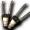
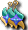

賽帕猴
我們伺服器實際的怪物設定（不是日版 wiki 的資料）。
能力值
| 項目 | 本伺服器 | 日版 wiki |
| 等級 | 78 | 78 |
| HP | 29118～32029 | 42,563 |
| AC | 15 | -16 |
| MC | 60 | -26 |
| AAR | 27 | 10 |
| SAR | 29 | 34 |
| STR | 78 | 51 |
| DEX | 30 | 31 |
| INT | 25 | 21 |
| WIS | 25 | 21 |
| CON | 108 | 51 |
| 經驗值 | 57000 | - |
| 名聲值 | 190 | - |
| 金錢 | 4202 | - |
| 攻擊屬性 | 隨機 | 風 |
| 防禦屬性 | 隨機 | 風 |
出現地圖
| 地圖 | 數量 | 出現位置 |
| 東方鐵甲船1-2 | 15～21 | 範圍 (1,1)-(128,128) |
掉落物品
| 道具 | 基本機率 |
| 破壞之刃 | 0.05% |
| 破神鎚 | 0.05% |
| 熾天使之羽 | 0.05% |
| 小王冠 | 0.05% |
 英雄的加速破壞者 | 0.05% |
| 英雄的命運角槍 | 0.05% |
 幻影專家耳環 | 0.05% |
 [商店用]優雅靈氣 [商店用]優雅靈氣 | 0.1% |
 [商店用]名聲復活術 [商店用]名聲復活術 | 0.1% |
| 暴風天空熊貓帽 | 0.05% |
 魔斯酒 魔斯酒 | 10% |
| 熱情之帽 | 3% |
| 破碎之刀 | 3% |
| 賽帕猴的破頭盔 | 5% |
| 琥珀魔力石碎片 | 3% |
基本機率再乘上伺服器的掉寶倍率；「隨機一件」是從一組道具裡抽一件。